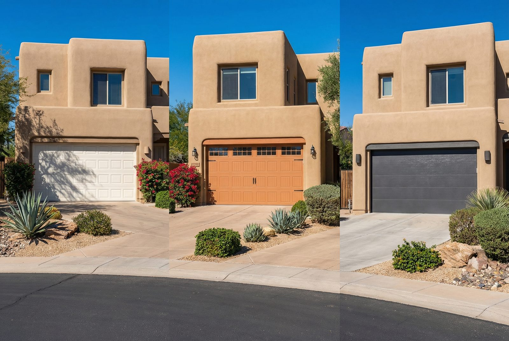
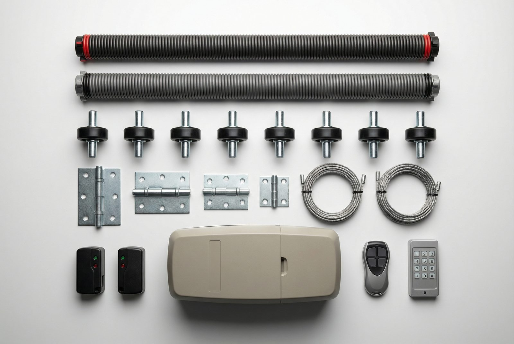

Areas We Serve
Gilbert Neighborhoods
East Valley Cities
Gilbert Garage Door Pro serves homeowners and businesses across Gilbert and the East Valley. Whether you're in Power Ranch or Queen Creek, our technicians are nearby and ready to help.

The table below reflects typical pricing for garage door repairs and installations in the Gilbert, AZ area. These ranges account for parts, labor, and a standard service call during normal business hours. Actual costs depend on your specific door, the extent of damage, brand of components, and other factors covered in detail below. We always provide a written estimate before starting any work.
| Service | Typical Cost Range |
|---|---|
| Spring Repair/Replacement | $150 – $350 |
| Opener Repair | $100 – $400 |
| Sensor Repair | $75 – $200 |
| Panel Replacement | $200 – $800 |
| Cable Repair | $100 – $250 |
| Track Repair/Realignment | $125 – $300 |
| Full Door Installation | $800 – $2,500 |
| Opener Installation | $300 – $600 |
Prices current as of early 2026. Call (480) 555-0199 for an exact quote on your specific repair.
No two garage door repairs are exactly the same. A number of variables can push your final cost toward the low or high end of a range — or occasionally beyond it. Understanding these factors helps you evaluate any estimate you receive and avoid being overcharged.
A single-car garage door (typically 8 to 9 feet wide) costs less to repair than a double-car door (15 to 18 feet wide). Double doors require heavier springs, longer cables, and more hardware. Spring replacement on a double door may run $50 to $100 more than the same job on a single door because two springs are standard rather than one.
Torsion springs mount horizontally above the door opening and are the industry standard for most modern homes. Extension springs run along the horizontal tracks on either side. Torsion springs cost more — a pair of standard torsion springs runs $150 to $250 in parts alone — but they last longer and are generally safer. Extension springs are slightly cheaper to replace, but the hardware replacement is often comparable in total labor cost. Most homes in Gilbert built after the late 1990s use torsion springs.
Name-brand openers such as LiftMaster or Chamberlain carry a higher price tag for both the units and their replacement parts than off-brand alternatives. That premium is usually worth paying: LiftMaster motors are rated for 15+ years of reliable use, while some generic brands struggle to make it five. When we quote a repair, we tell you exactly which parts we're using and why.
Some companies add a surcharge for after-hours or weekend calls — sometimes $75 to $150 on top of the repair cost. We do not charge extra for emergency calls or after-hours service in Gilbert and the East Valley. The price you're quoted is the price you pay.
Standard springs, cables, and rollers are stocked on our trucks. Uncommon parts for discontinued door models, specialty panels, or rare opener circuit boards may need to be ordered, which adds time and occasionally cost. We always disclose this upfront if it applies to your repair.
A sensor realignment that takes 15 minutes costs less than a full spring replacement that requires unloading the old spring under tension, installing the new spring, adjusting cable tension, and testing door balance. More complex jobs — like replacing panels on a custom door or installing a new opener on an unusual garage configuration — take more time and are priced accordingly.

Gilbert pricing for garage door repair is comparable to the broader Phoenix metro average. Within the East Valley, rates in Gilbert, Mesa, and Chandler are generally in line with each other and tend to run slightly lower than Scottsdale or Paradise Valley, where higher property values and cost of living push service rates up across all trades. Compared to coastal markets like Los Angeles or San Francisco, Arizona labor rates are moderate, which means homeowners here get solid value for professional repairs.
According to the Door & Access Systems Manufacturers Association (DASMA), the majority of residential garage door repairs fall in the $150 to $350 range for the most common issues — consistent with what we see daily in the Gilbert market. For broader home repair cost context, sources like Angi's national cost data show similar ranges, with regional variation based on local labor markets.
One nuance specific to Arizona: the extreme heat accelerates wear on springs, opener motors, and rubber components. Gilbert homeowners may find themselves replacing springs and other hardware more frequently than the national average suggests, simply because the desert climate shortens component lifespan. This is something to keep in mind when a technician recommends proactive replacement of adjacent parts — it is often a sound investment rather than an upsell.

Spring replacement is the most common garage door repair. For a single torsion spring, expect to pay $150 to $250. Replacing both springs (strongly recommended when one breaks — the other is close behind) runs $200 to $350. High-cycle springs, rated for 25,000 to 50,000 cycles versus the standard 10,000, cost slightly more upfront but last two to three times longer — a smart investment for active households. Learn more about spring repair →
Opener repairs cover a wide range of issues: motor failures, stripped gears, broken drive belts or chains, faulty circuit boards, and remote programming problems. Simple fixes like reprogramming a remote or replacing a wall button start around $100. Replacing internal motor components or a logic board can reach $300 to $400. If the opener is more than 12 to 15 years old and needs a major repair, a full replacement at $300 to $600 may be more cost-effective in the long run. Learn more about opener repair →
Safety sensors are required by federal law on all openers manufactured after 1993. When they malfunction — door reverses immediately, opener blinks, or door won't close — the fix is often a realignment, cleaning, or wiring repair. Simple alignment adjustments start at $75. Replacing a damaged sensor unit or running new wiring runs $100 to $200. Learn more about sensor repair →
New door installation costs vary widely based on door size, material (steel, aluminum, wood composite, carriage house style), insulation rating, and any decorative hardware. A basic single steel door with installation starts around $800 to $1,200. A premium insulated double door with decorative windows and upgraded hardware can reach $2,000 to $2,500 or more. Learn more about new door installation →
Take spring replacement as an example: a single torsion spring on a standard single-car door is less work than a paired spring replacement on a wide double door with a high-lift track configuration. An LiftMaster 8550W opener part costs more than a generic equivalent because it is a purpose-built component. These are legitimate price differences — not padding. Our technicians explain exactly what you're paying for and why.
One note on emergency service: we do not charge an after-hours surcharge, so a repair quoted at $200 at 2 PM will cost the same at 10 PM. Not all companies operate this way, so it is worth asking directly when you call.
Getting accurate, comparable quotes for garage door repair is straightforward if you know what to ask. Here are four practices that protect you as a consumer:
For any repair over $200, it is worth calling two companies. Prices can vary significantly even within the same market. A second opinion also helps if the first technician is recommending a full replacement rather than a repair — another set of eyes on the problem is valuable.
A professional estimate should separate parts from labor. This lets you understand whether the cost is driven by expensive components (normal for some repairs) or inflated labor rates. If a company won't itemize, that is a red flag.
Reputable companies stand behind their work. Ask specifically: what is the warranty on the parts used, and what is the warranty on the labor? A standard parts warranty is 90 days to one year; some premium components carry longer manufacturer warranties. Labor warranties of 30 to 90 days are common. Get the terms in writing.
In Arizona, garage door contractors should carry liability insurance and, for larger installations, may need to be licensed with the Arizona Registrar of Contractors. Ask for proof of insurance before any work begins. A legitimate company will have it on hand.
The garage door repair industry has a small but visible segment of companies that use deceptive pricing tactics. Being aware of these patterns can save you hundreds of dollars:
A company advertises a $29 or $39 service call fee. Once the technician is in your garage, the "diagnosis" reveals that your $29 call now requires $400 in labor, $300 in "specialty springs," and $150 in miscellaneous parts — none of which were disclosed upfront. The artificially low call fee is designed to get a technician in front of you; the real money is in the inflated repair costs. Always ask for a total estimate before agreeing to any work.
A broken spring or malfunctioning opener does not automatically mean you need a new door or a full system replacement. If a technician immediately recommends full replacement without clearly explaining why repair is not viable, get a second opinion. Repairs are almost always the right answer unless the door or opener is genuinely at end of life.
Any legitimate company will provide a written estimate before starting work. Verbal quotes are not binding and leave you with no recourse if the final bill comes in much higher. Insist on a written estimate — it takes a professional less than two minutes to produce one.
An uninsured technician working on your property creates real liability for you as the homeowner if they are injured on the job. Always ask for proof of insurance. The cost of hiring a licensed, insured company is almost never higher — it just weeds out the operators who are cutting corners everywhere.
A standard payment structure is either pay upon completion or a small deposit on large material orders. A company demanding full payment before any work begins should raise concern. Most reputable companies only collect payment after the job is done to your satisfaction.
Torsion spring replacement typically costs $150–$350 for a single spring, or $200–$400 if both springs are replaced (recommended). The price includes the spring, labor, and a full safety inspection. High-cycle springs cost slightly more but last 2–3 times longer.
Cost depends on the specific problem, parts needed, door size, and brand. A simple sensor alignment costs far less than a full spring replacement. Premium brands like LiftMaster cost more for parts than generic brands. We always provide an exact quote before starting work.
We provide free on-site estimates for all garage door repairs in Gilbert and the East Valley. There's no charge just for showing up and diagnosing the problem.
For major repairs and full door installations, we can discuss payment options. Contact us to learn about current availability.
Get at least two written estimates, ask for itemized pricing, verify the company is licensed and insured, and beware of extremely low "service call" fees that often lead to inflated repair costs. A reputable company will give you a clear, written estimate before starting work.
Gilbert Garage Door Pro serves homeowners and businesses across Gilbert and the East Valley. Whether you're in Power Ranch or Queen Creek, our technicians are nearby and ready to help.